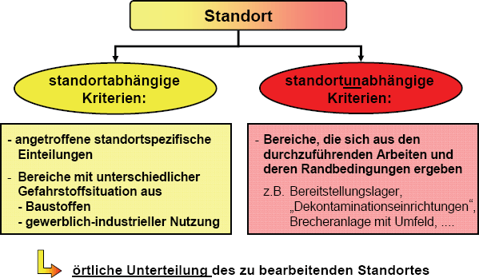
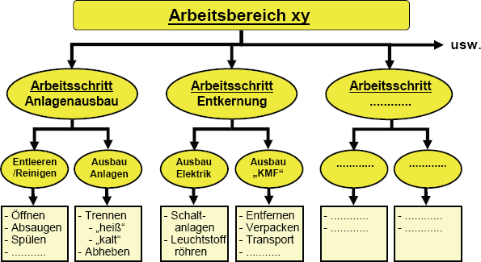

Anlage 6 zu TRGS 524
"Ermittlung der Arbeitsbereiche, Arbeitsabläufe und Tätigkeiten mit Exposition gemäß Nummer 4.4 und 4.5"
Schritt 1:
Ermittlung der Arbeitsbereiche, in denen Gefahrstoffe
freigesetzt werden können

Schritt 2:
Ermittlung der Arbeitsschritte, Arbeitsverfahren, Abläufe und Tätigkeiten für
jeden nach Nummer 4.4 festgestellten Arbeitsbereich am Beispiel
"Industrierückbau"
